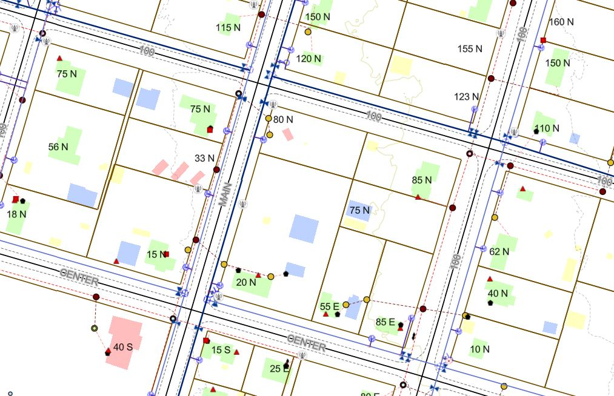

Under Construction

Wildfire projects I've worked on from 2021 untill now while employed by Kolob Canyon Air Services. All the wildfires I worked on were located in the western united states and the end product was used to gather intel and used to fight the fire.

My capstone project at Sothern Utah University was to create and establish the university campus map. This included collecting data using GPS methods, using cartographic methods and software like ArcGIS Pro to create a map, and use a variety of diffrent design methods using Arcade, HTML, and a little Python languages.

This project was a utility map designed for the town of Kanarraville, Utah. While working on this utility map I worked with collecting data via satellite imagery, used existing databases and added to them using joins and relates, and implemented a variety of symboloby and cartographic design methods to present the data to a larger audience.
Under Construction

Just a fun little personal project designing a 3D animation showing some of the notable locations where the famed geographer Alexander von Humboldt traveled during his expeditions through South America.